Scale bytes into human friendly units. Can use either SI units (e.g. kB = 1000 bytes) or binary units (e.g. kiB = 1024 bytes). See Units of Information on Wikipedia for more details.
Arguments
- units
Unit to use. Should either one of:
"kB", "MB", "GB", "TB", "PB", "EB", "ZB", and "YB" for SI units (base 1000).
"kiB", "MiB", "GiB", "TiB", "PiB", "EiB", "ZiB", and "YiB" for binary units (base 1024).
auto_siorauto_binaryto automatically pick the most appropriate unit for each value.
- accuracy
A number to round to. Use (e.g.)
0.01to show 2 decimal places of precision. IfNULL, the default, uses a heuristic that should ensure breaks have the minimum number of digits needed to show the difference between adjacent values.Applied to rescaled data.
- scale
A scaling factor:
xwill be multiplied byscalebefore formatting. This is useful if the underlying data is very small or very large.- ...
Arguments passed on to
numberprefixAdditional text to display before the number. The suffix is applied to absolute value before
style_positiveandstyle_negativeare processed so thatprefix = "$"will yield (e.g.)-$1and($1).suffixAdditional text to display after the number.
big.markCharacter used between every 3 digits to separate thousands.
decimal.markThe character to be used to indicate the numeric decimal point.
style_positiveA string that determines the style of positive numbers:
"none"(the default): no change, e.g.1."plus": preceded by+, e.g.+1."space": preceded by a Unicode "figure space", i.e., a space equally as wide as a number or+. Compared to"none", adding a figure space can ensure numbers remain properly aligned when they are left- or right-justified.
style_negativeA string that determines the style of negative numbers:
"hyphen"(the default): preceded by a standard hypen-, e.g.-1."minus", uses a proper Unicode minus symbol. This is a typographical nicety that ensures-aligns with the horizontal bar of the the horizontal bar of+."parens", wrapped in parentheses, e.g.(1).
scale_cutNamed numeric vector that allows you to rescale large (or small) numbers and add a prefix. Built-in helpers include:
cut_short_scale(): [10^3, 10^6) = K, [10^6, 10^9) = M, [10^9, 10^12) = B, [10^12, Inf) = T.cut_long_scale(): [10^3, 10^6) = K, [10^6, 10^12) = M, [10^12, 10^18) = B, [10^18, Inf) = T.cut_si(unit): uses standard SI units.
If you supply a vector
c(a = 100, b = 1000), absolute values in the range[0, 100)will not be rescaled, absolute values in the range[100, 1000)will be divided by 100 and given the suffix "a", and absolute values in the range[1000, Inf)will be divided by 1000 and given the suffix "b". If the division creates an irrational value (or one with many digits), the cut value below will be tried to see if it improves the look of the final label.trimLogical, if
FALSE, values are right-justified to a common width (seebase::format()).
Value
A labeller function that takes a numeric vector of breaks and returns a character vector of labels.
See also
Other labels for continuous scales:
label_currency(),
label_number_auto(),
label_number_si(),
label_ordinal(),
label_parse(),
label_percent(),
label_pvalue(),
label_scientific()
Other labels for log scales:
label_log(),
label_number_si(),
label_scientific()
Examples
demo_continuous(c(1, 1e6))
#> scale_x_continuous()

demo_continuous(c(1, 1e6), labels = label_bytes())
#> scale_x_continuous(labels = label_bytes())

# Auto units are particularly nice on log scales
demo_log10(c(1, 1e7), labels = label_bytes())
#> scale_x_log10(labels = label_bytes())

# You can also set the units
demo_continuous(c(1, 1e6), labels = label_bytes("kB"))
#> scale_x_continuous(labels = label_bytes("kB"))

# You can also use binary units where a megabyte is defined as
# (1024) ^ 2 bytes rather than (1000) ^ 2. You'll need to override
# the default breaks to make this more informative.
demo_continuous(c(1, 1024^2),
breaks = breaks_width(250 * 1024),
labels = label_bytes("auto_binary")
)
#> scale_x_continuous(breaks = breaks_width(250 * 1024), labels = label_bytes("auto_binary"))
